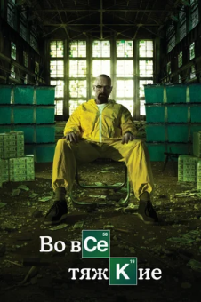
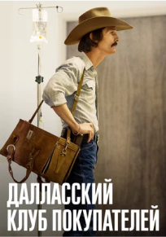
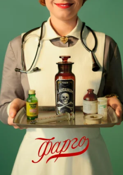
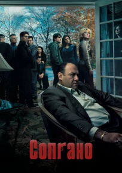
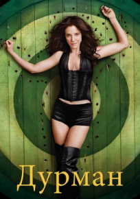

Во все тяжкие
Год: 2008 (5 сезонов)
Страна: США
Школьный учитель химии Уолтер Уайт узнаёт, что болен раком лёгких.
Учитывая сложное финансовое состояние дел семьи, а также перспективы,
Уолтер решает заняться изготовлением метамфетамина. Для этого он
привлекает своего бывшего ученика Джесси Пинкмана, когда-то исключённого
из школы при активном содействии Уайта. Пинкман сам занимался варкой
мета, но накануне, в ходе рейда УБН, он лишился подельника и лаборатории.
Учитывая сложное финансовое состояние дел семьи, а также перспективы,
Уолтер решает заняться изготовлением метамфетамина. Для этого он
привлекает своего бывшего ученика Джесси Пинкмана, когда-то исключённого
из школы при активном содействии Уайта. Пинкман сам занимался варкой
мета, но накануне, в ходе рейда УБН, он лишился подельника и лаборатории.
Оценка: 8.9
Режиссер: Мишель Макларен, Адам Берншейтн и др.
Актеры: Брайан Крэнстон, Анна Ганн, Аарон Пол и др.
Список похожих фильмов
Декстер

Далласский клуб

Фарго

Сопрано

Дурман